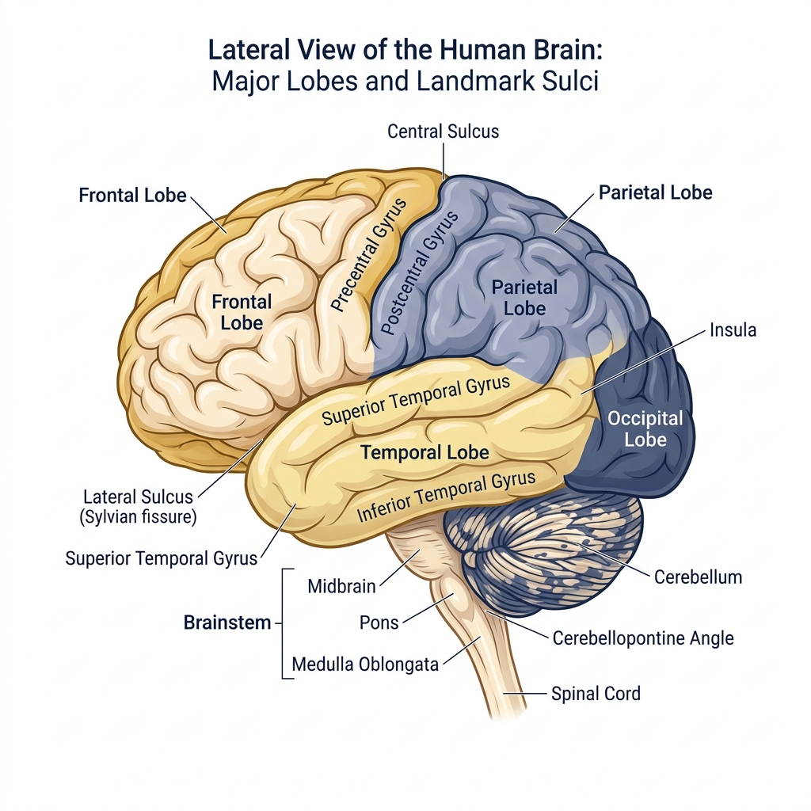
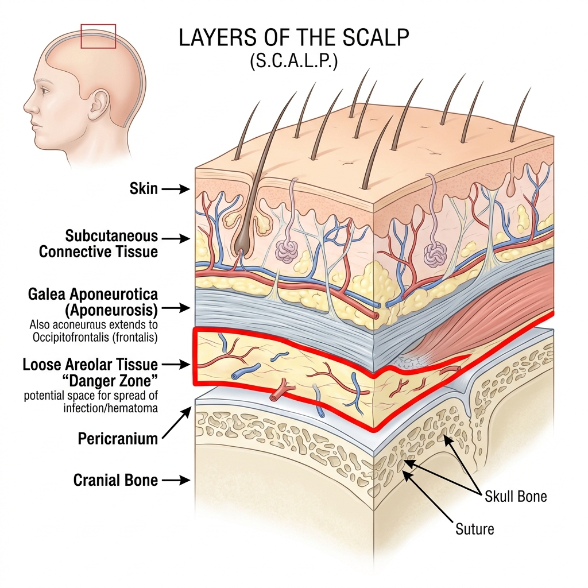
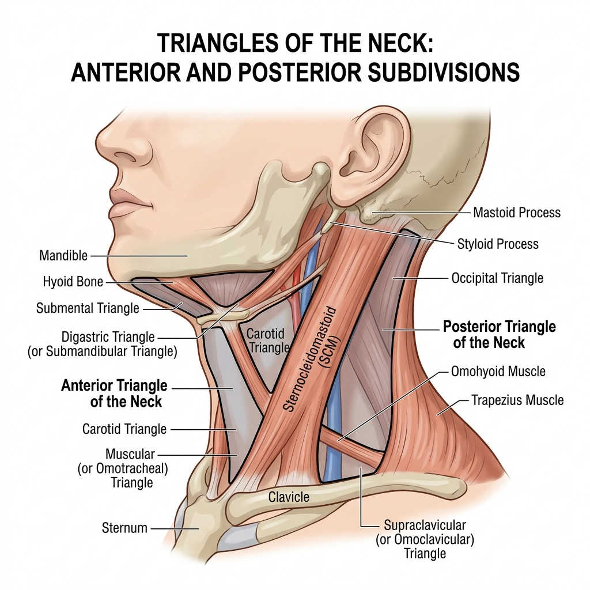
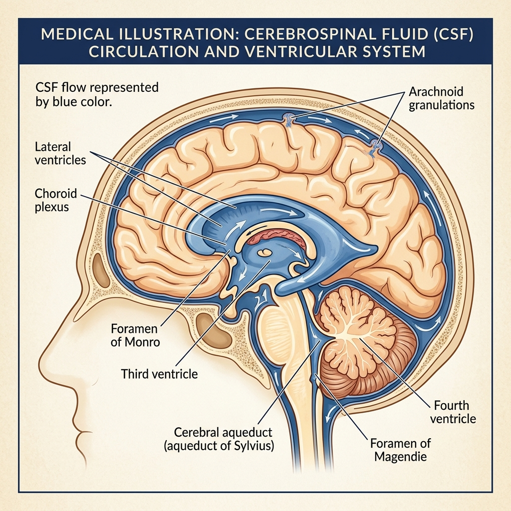
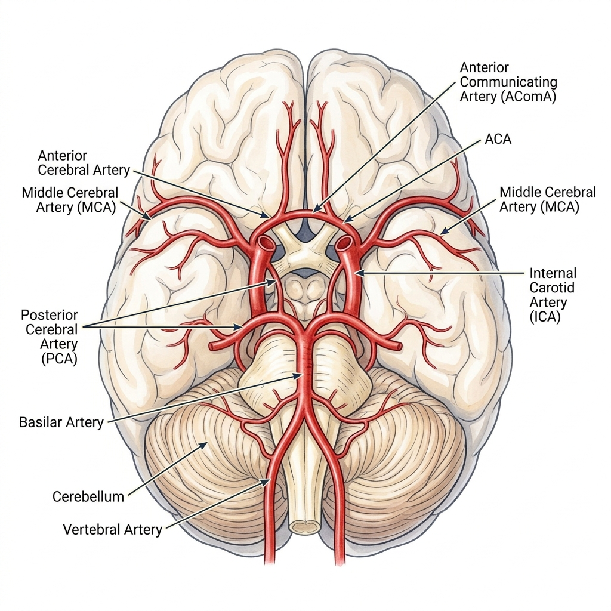
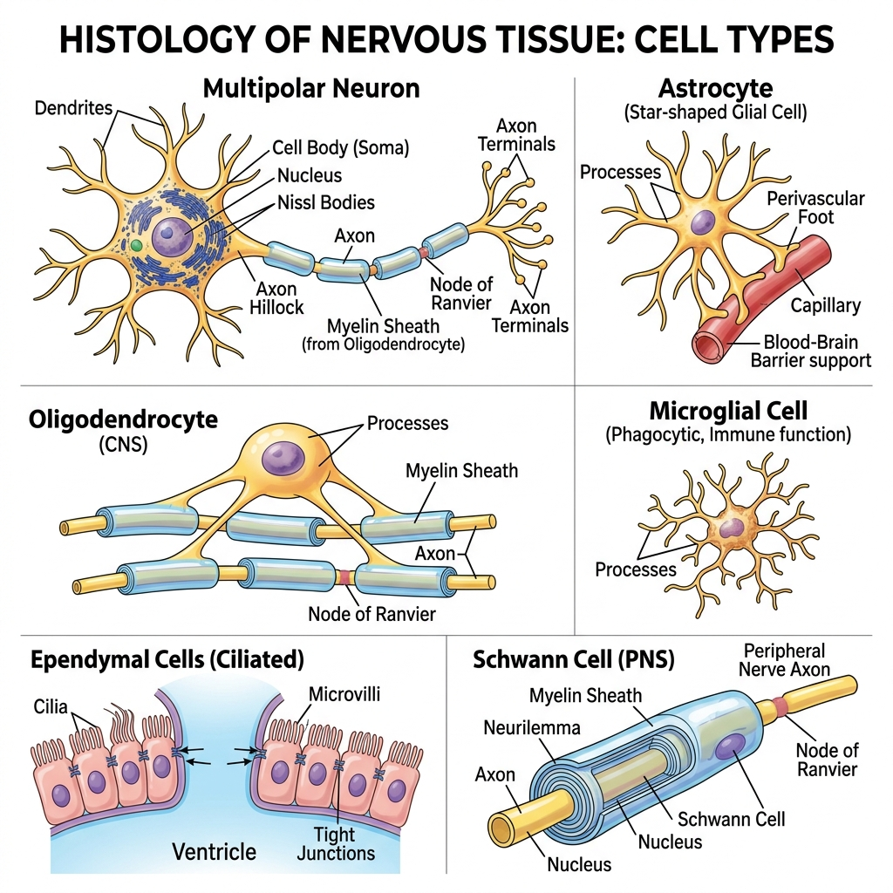
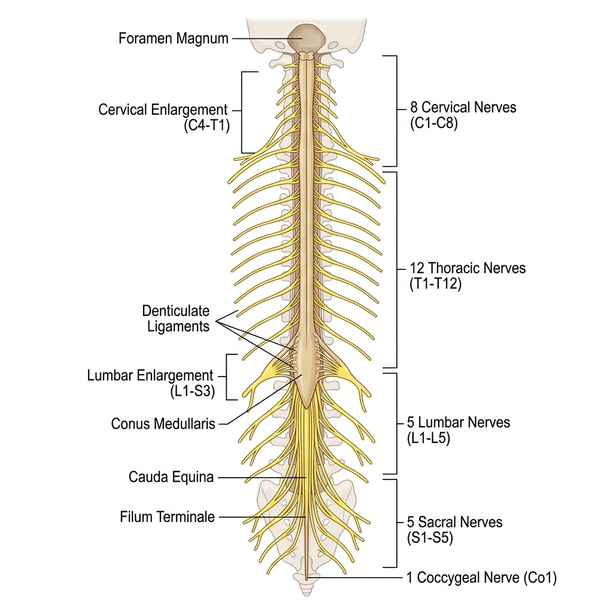
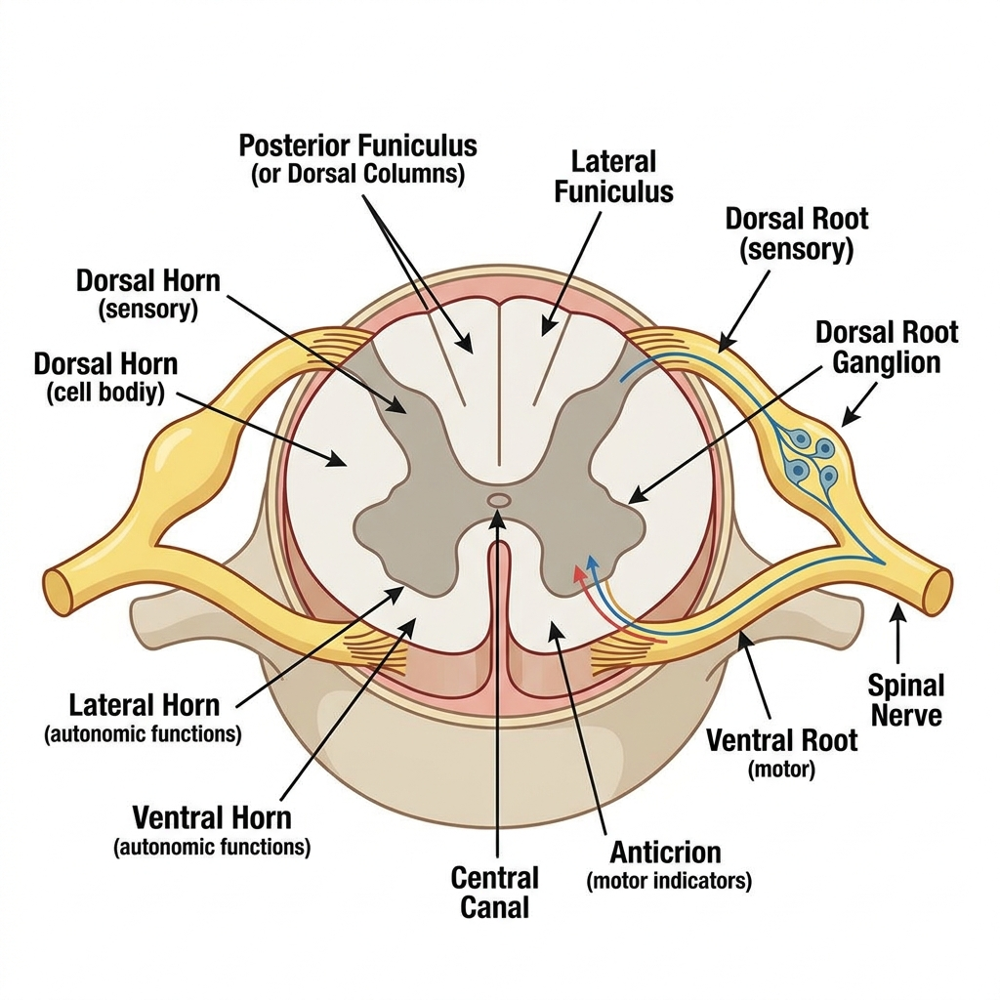

Head, Neck & Brain
Anatomy Mastery
The definitive interactive study guide covering embryology, osteology, muscles, nerves, brain anatomy, clinical scenarios, and 60+ practice questions — all from your lecture notes, past papers, and The Big Picture textbook.

Embryology & Development
Pharyngeal arches, facial segments, intramembranous ossification, and congenital anomalies.
Scalp & Skull
5 layers (SCALP mnemonic), cranial vs facial bones, foramina, and fracture patterns.
Muscles of the Head
Facial expression vs mastication muscles, nerve supply, and clinical testing.
Brain External Anatomy
Lobes, sulci, gyri, cerebellum, brainstem, and meninges in full detail.
Functional Brain Regions
Motor cortex, sensory cortex, Broca's area, Wernicke's area, and the homunculus.
Ventricles & CSF
CSF production, circulation pathway, hydrocephalus, and clinical scenarios.
Circle of Willis
Arterial supply, watershed areas, stroke pathophysiology, and the internal capsule.
MCQ Practice
60+ exam-style questions with instant feedback and detailed explanations.
Cranial Nerves — TeachMeAnatomy
All 12 cranial nerves with pathways, functions, clinical testing, and lesion patterns
Skull & Foramina — TeachMeAnatomy
Labeled skull views, cranial fossae, sutures, and foramina with clear diagrams
Neck Anatomy — TeachMeAnatomy
Neck triangles, muscles, vessels, cervical plexus, and thyroid region
Neuroanatomy — TeachMeAnatomy
Brain, spinal cord, meninges, ventricles, tracts, and clinical correlations
Cranial Nerves — Kenhub
Detailed articles with illustrations, mnemonics, and free anatomy quizzes
Head Anatomy — TeachMeAnatomy
Facial muscles, TMJ, parotid gland, blood supply, and scalp layers
Before we look at the individual structures of the head and neck, we need to understand where they came from. The head and neck develop from special embryonic structures called pharyngeal (branchial) arches — segmental bars of tissue that appear in the embryo's neck region during the 4th week of development. Think of these like building blocks: each arch comes pre-packaged with its own artery, nerve, cartilage, and muscle tissue, and each one eventually gives rise to a specific set of adult structures. Understanding which arch produces which muscle (and which nerve supplies it) is the key to making sense of head and neck innervation patterns — and it is one of the most commonly examined topics.
- The face develops from 3 segments embryologically — frontonasal prominence, maxillary prominences, and mandibular prominences.
- The neck develops from 6 segmental sclerotomes which give rise to the cervical vertebrae and associated structures.
- Cranial bones develop via intramembranous ossification — mesenchymal cells surround the developing brain and ossify directly into flat bone without a cartilage intermediate. This is different from endochondral ossification (limbs).
- There are 6 pharyngeal (branchial) arches, though the 5th is rudimentary. Each arch contains: an artery, a cartilage bar, a nerve, and muscle tissue.
Pharyngeal Arches — The Master Blueprint
| Arch | Nerve | Muscles | Skeletal Derivatives |
|---|---|---|---|
| 1st (Mandibular) | CN V3 (Trigeminal, mandibular division) | Muscles of mastication (masseter, temporalis, medial & lateral pterygoid), mylohyoid, anterior belly of digastric, tensor tympani, tensor veli palatini | Meckel's cartilage → malleus, incus, mandible (partial) |
| 2nd (Hyoid) | CN VII (Facial) | Muscles of facial expression, stapedius, stylohyoid, posterior belly of digastric, platysma | Reichert's cartilage → stapes, styloid process, lesser horn of hyoid, stylohyoid ligament |
| 3rd | CN IX (Glossopharyngeal) | Stylopharyngeus | Greater horn and body of hyoid bone |
| 4th & 6th | CN X (Vagus) — superior laryngeal (4th), recurrent laryngeal (6th) | Cricothyroid (4th), all intrinsic laryngeal muscles (6th) | Laryngeal cartilages (thyroid, cricoid, arytenoid) |
- 1st arch = Mastication (CN V3) — if asked "which arch gives muscles of mastication?" → always 1st.
- 2nd arch = Facial expression (CN VII) — these muscles are unique because they insert into skin, not bone.
- Cleft lip = failure of fusion of maxillary and medial nasal prominences.
- Cleft palate = failure of fusion of palatine shelves.
- DiGeorge syndrome = failure of development of 3rd & 4th pharyngeal pouches → absent thymus & parathyroids.
Section 1 Quiz
The scalp is the soft tissue covering the top of the skull — but it is far from simple. It is arranged in 5 distinct layers that you need to know by heart (use the mnemonic SCALP). Clinically, the most important layer is the 4th — the loose areolar tissue — because this is the "danger zone" where blood, pus, and infections can spread freely across the entire top of the head. Below the scalp sit the bones of the skull, which are divided into cranial bones (protecting the brain) and facial bones (forming the skeleton of the face). These bones are pierced by numerous foramina (holes) that transmit nerves and blood vessels — knowing which structure passes through which foramen is essential for exams.

S — Skin: thick, hair-bearing, contains sebaceous glands. Bleeds profusely when lacerated (vessels held open by dense connective tissue below).
C — Subcutaneous Connective Tissue: dense fibrous tissue containing blood vessels and nerves. Acts as a "closed compartment".
A — Aponeurosis (Galea Aponeurotica): tough fibromuscular sheet connecting frontalis (anteriorly) and occipitalis (posteriorly). Surgically important plane.
L — Loose Areolar Tissue: the "DANGER ZONE" — infection, hematoma and blood can spread widely and freely here across the whole calvaria. Emissary veins pass through this layer and can transmit infection intracranially.
P — Pericranium: the periosteum of the skull bones. Firmly attached at suture lines.
Bones of the Skull
Surround and protect the brain:
- Frontal bone — forms the forehead and superior orbital margin
- Parietal bones (×2) — form the roof and sides of the cranium
- Temporal bones (×2) — house the middle and inner ear; contain the stylomastoid foramen (CN VII exit)
- Occipital bone — contains the foramen magnum (brainstem/spinal cord exit)
- Sphenoid bone — "keystone" of the skull base; contains sella turcica (holds pituitary gland)
- Ethmoid bone — contributes to the nasal cavity and medial orbital wall
Surround the openings of the airway and digestive tract:
- Nasal bones (×2) — bridge of the nose
- Lacrimal bones (×2) — medial wall of orbit; lacrimal sac
- Zygomatic bones (×2) — cheekbones
- Palatine bones (×2) — posterior hard palate
- Maxillae (×2) — upper jaw, floor of orbit
- Mandible — lower jaw; the only movable bone of the skull
- Vomer — nasal septum
- Inferior nasal conchae (×2)
Key Foramina of the Skull
| Foramen | Transmitted Structure |
|---|---|
| Foramen Magnum | Brainstem/spinal cord, vertebral arteries, CN XI (ascending part) |
| Foramen Ovale | CN V3 (Mandibular division of trigeminal) |
| Foramen Rotundum | CN V2 (Maxillary division of trigeminal) |
| Foramen Spinosum | Middle Meningeal Artery (relevant to EDH!) |
| Stylomastoid Foramen | CN VII (Facial nerve) |
| Jugular Foramen | CN IX, X, XI; Internal Jugular Vein |
| Hypoglossal Canal | CN XII (Hypoglossal) |
| Internal Acoustic Meatus | CN VII, CN VIII (Vestibulocochlear) |
| Superior Orbital Fissure | CN III, IV, V1, VI; Ophthalmic veins |
| Optic Canal | CN II (Optic nerve), Ophthalmic artery |
- Pterion = thinnest part of the skull (junction of frontal, parietal, temporal, sphenoid). A blow here can rupture the Middle Meningeal Artery → Epidural (Extradural) Haematoma.
- Depressed skull fractures — bone fragments pushed inward, risking dural tear and brain injury.
- Base of skull fracture signs: Raccoon eyes (periorbital ecchymosis), Battle's sign (mastoid ecchymosis), CSF rhinorrhoea or otorrhoea.
- Le Fort fractures (I, II, III) — classified mid-face fractures from high-impact trauma.
Section 2 Quiz
The muscles of the head fall into two major groups, and understanding the difference between them is crucial. The muscles of facial expression (from the 2nd pharyngeal arch, supplied by CN VII) are unique in all of anatomy because they insert directly into the skin — which is why they can produce fine movements like smiling, frowning, and blinking. The muscles of mastication (from the 1st pharyngeal arch, supplied by CN V3) are responsible for chewing — they move the mandible at the TMJ. There are only 4 of them, but you must know each one's specific action.
- Origin: 2nd pharyngeal arch
- Unique feature: They insert into the skin rather than bone — this is why they produce facial movements (smiling, frowning, etc.)
- Innervation: ALL supplied by CN VII (Facial nerve)
- Examples: Orbicularis oculi (closes eye), orbicularis oris (closes mouth), frontalis (raises eyebrows), buccinator (blowing/sucking), platysma (neck skin)
- Clinical: Bell's palsy = lower motor neuron lesion of CN VII → drooping of entire half of face including forehead. Upper motor neuron lesion → forehead sparing (because forehead receives bilateral UMN innervation).
There are 4 muscles of mastication, all from the 1st pharyngeal arch:
- Masseter: The strongest muscle in the body for its size. Elevates (closes) jaw. Superficial fibers from zygomatic arch to mandibular angle.
- Temporalis: Fan-shaped muscle from temporal fossa. Anterior fibers elevate jaw; posterior fibers retract the mandible. Only muscle that retracts!
- Medial Pterygoid: Deep to mandible. Elevates jaw and assists in lateral (side-to-side) movement.
- Lateral Pterygoid: Two heads (superior & inferior). Protracts the mandible and assists depression (opening) and lateral movement.
All innervated by CN V3 (mandibular division of trigeminal nerve).
Section 3 Quiz
The joints of the head and neck are surprisingly diverse. Most skull bones are joined by sutures — immovable fibrous joints. But the mandible connects to the skull via the temporomandibular joint (TMJ), which is the only synovial joint of the entire skull. It is a sophisticated modified hinge with an articular disc that allows both rotation and translation, enabling complex chewing movements. At the base of the skull, the craniovertebral joints (atlas-occipital and atlas-axis) allow us to nod and shake our heads.
- Classification: Synovial condylar (modified hinge) joint — the only synovial joint of the skull.
- Articular Surfaces: Head/condyle of the mandible articulates with the mandibular (glenoid) fossa of the temporal bone.
- Articular Disc: A fibrocartilaginous disc divides the joint into upper and lower compartments. The upper compartment allows translational (sliding) movements; the lower allows rotational (hinge) movements.
- Sensory Nerve Supply: Auriculotemporal nerve (branch of CN V3).
- Ligaments: Lateral (temporomandibular) ligament (strongest), sphenomandibular ligament, stylomandibular ligament.
| TMJ Movement | Muscles Responsible | Compartment |
|---|---|---|
| Elevation (closing) | Masseter, Temporalis, Medial Pterygoid | Lower (rotation) |
| Depression (opening) | Lateral Pterygoid, Digastric, Mylohyoid, Geniohyoid (+ gravity) | Both (rotation + translation) |
| Protraction (protrusion) | Lateral Pterygoid, Medial Pterygoid | Upper (translation) |
| Retraction | Temporalis (posterior fibers) | Upper (translation) |
| Lateral excursion | Contralateral pterygoid muscles | Both |
Other Joints of the Head & Neck
- Coronal suture: Frontal + Parietal
- Sagittal suture: Between 2 Parietal bones
- Lambdoid suture: Parietal + Occipital
- All are fibrous joints (synarthrosis) — immovable after fusion in adulthood.
- Fontanelles (in infants): anterior (bregma) and posterior (lambda) — permit moulding during birth; allow brain growth.
- Atlanto-occipital (C0-C1): Synovial condyloid → allows flexion/extension (nodding "YES").
- Atlanto-axial (C1-C2): Synovial pivot → allows rotation (shaking head "NO"). The odontoid process (dens) of C2 acts as the pivot.
- Intervertebral discs (C2-C7): Fibrocartilaginous symphysis joints.
- Facet joints: Synovial gliding (plane) joints.
- Mechanism: Wide yawn or direct blow → mandibular condyle slips anteriorly out of the glenoid fossa (over the articular eminence).
- Presentation: Inability to close the jaw, pain anterior to the ear, malocclusion.
- Reduction: Downward and posterior pressure on the mandible (Hippocratic method).
- Jaw deviation on opening = problem on the same side it deviates to (ipsilateral disc or muscle dysfunction).
Section 4 Quiz
The neck is a compact anatomical region containing vital structures — the airway, major blood vessels (carotid arteries, jugular veins), nerves, the oesophagus, and the spinal cord — all packed into a relatively small space. To organise this complexity, anatomists divide the neck into triangles using key muscles as boundaries. The sternocleidomastoid (SCM) is the defining landmark — it splits the neck into an anterior triangle (containing the carotid vessels and thyroid) and a posterior triangle (containing the brachial plexus and subclavian vessels). The bony framework is provided by the 7 cervical vertebrae.

- Submental triangle: Bounded by anterior bellies of digastric and hyoid bone. Contains: submental lymph nodes.
- Digastric (submandibular) triangle: Contains submandibular gland, facial artery & vein, hypoglossal nerve (CN XII).
- Carotid triangle: Contains common carotid bifurcation (at C4), internal & external carotid arteries, internal jugular vein, CN X, CN XII.
- Muscular triangle: Contains thyroid gland, infrahyoid (strap) muscles, trachea, oesophagus.
- Bounded by SCM (anterior), trapezius (posterior), clavicle (inferior).
- Occipital triangle: Contains accessory nerve (CN XI), cutaneous branches of cervical plexus.
- Supraclavicular (subclavian) triangle: Contains subclavian artery (3rd part), brachial plexus trunks.
- Floor: splenius capitis, levator scapulae, and scalene muscles.
Cervical Vertebrae
- There are 7 cervical vertebrae (C1-C7) providing mobility and spinal cord protection.
- C1 (Atlas): Ring-shaped, no body, no spinous process. Supports the skull.
- C2 (Axis): Has the dens (odontoid process) which the atlas pivots around for head rotation.
- C7 (Vertebra Prominens): Long palpable spinous process — used as surface landmark.
- All cervical vertebrae have transverse foramina (transmit vertebral arteries from C6 upward).
- Intervertebral discs are symphysis (fibrocartilaginous) joints.
Section 5 Quiz
Two cranial nerves dominate head and neck anatomy: the Trigeminal (CN V) and the Facial (CN VII). Think of CN V as the "sensory master" — it provides sensation to the entire face through three divisions (V1, V2, V3). CN VII is the "motor master" — it controls all the muscles of facial expression. The head receives its blood supply from the common carotid artery, which bifurcates into the external carotid (supplying the face and scalp) and the internal carotid (supplying the brain). A key exam trap: the internal carotid has no branches in the neck.
The 12 Cranial Nerves — Master Mnemonic
Memorise the nerves using: "Oh Oh Oh To Touch And Feel Very Good Velvet, Such Heaven"
Memorise their function (Sensory, Motor, or Both) using: "Some Say Marry Money But My Brother Says Big Brains Matter More"
| # | Nerve Name | Function | Key Role |
|---|---|---|---|
| I | Olfactory | Sensory | Smell |
| II | Optic | Sensory | Vision |
| III | Oculomotor | Motor | Eye movement (most muscles), pupillary constriction |
| IV | Trochlear | Motor | Eye movement (Superior Oblique muscle) |
| V | Trigeminal | Both | Facial sensation (V1,V2,V3), muscles of mastication (V3) |
| VI | Abducens | Motor | Eye movement (Lateral Rectus muscle) |
| VII | Facial | Both | Facial expression, taste (anterior 2/3 tongue), lacrimal/salivary glands |
| VIII | Vestibulocochlear | Sensory | Hearing and balance |
| IX | Glossopharyngeal | Both | Taste/sensation (posterior 1/3 tongue), swallowing, parotid gland |
| X | Vagus | Both | Parasympathetic to thorax/abdomen, gag reflex, speaking |
| XI | Spinal Accessory | Motor | Shoulder elevation (Trapezius) & head turning (SCM) |
| XII | Hypoglossal | Motor | Tongue movement |
The Trigeminal Nerve (CN V) — Sensory Master
The trigeminal nerve provides sensory supply to the entire face and motor supply only via V3 (to muscles of mastication). It originates at the pontomedullary junction.
- V1 (Ophthalmic): Sensory to forehead, upper eyelid, cornea, bridge of nose. Exits via: Superior Orbital Fissure.
- V2 (Maxillary): Sensory to cheek, upper lip, upper teeth, palate, nasal cavity. Exits via: Foramen Rotundum.
- V3 (Mandibular): Sensory to lower face, lower teeth, tongue (anterior 2/3 sensation), ear. Motor to muscles of mastication. Exits via: Foramen Ovale. The only division with motor fibers.
The Facial Nerve (CN VII) — Motor Master
- Origin: Pontomedullary junction (cerebellopontine angle).
- Intracranial course: Enters the internal acoustic meatus → runs through the facial canal in the temporal bone → exits through the stylomastoid foramen.
- Extracranial: Passes through the parotid gland → splits into 5 terminal branches.
- Functions: Motor to muscles of facial expression, taste to anterior 2/3 of tongue (via chorda tympani), parasympathetic to submandibular, sublingual, and lacrimal glands.
- Zambia → Zygomatic branch (closes eyelids)
- Boys → Buccal branch (blowing, sucking)
- Make → Marginal Mandibular branch (lower lip movement)
- Toy → Temporal branch (raises eyebrows, wrinkles forehead)
- Cars → Cervical branch (platysma)
Arterial Supply of the Head
Supplies the face and superficial structures. Four key branches for head & neck:
- Lingual artery — tongue and floor of mouth
- Facial artery — face (crosses mandible at anterior border of masseter — palpable here)
- Maxillary artery — deep face, pterygopalatine fossa. Gives rise to the Middle Meningeal Artery (enters skull via foramen spinosum)
- Superficial Temporal artery — scalp (palpable anterior to the ear)
- Supplies the brain and orbit.
- Has NO branches in the neck — this is a classic exam trap.
- Enters the skull via the carotid canal in the temporal bone.
- Gives rise to: ophthalmic artery, middle cerebral artery, anterior cerebral artery.
Section 6 Quiz
The brain is the most complex organ in the body — the command centre for everything we do, think, and feel. It weighs about 1.0–1.5 kg in adults and is divided into the cerebrum (the large, wrinkled mass forming most of what you see), the cerebellum (the "little brain" at the back responsible for coordination), and the brainstem (midbrain, pons, medulla — connecting the brain to the spinal cord and controlling vital functions like breathing). The cerebrum is divided into two hemispheres by the longitudinal fissure, and each hemisphere is further divided into 4 lobes by prominent grooves called sulci. These sulci are your anatomical landmarks — they tell you exactly where one functional area ends and another begins.
The Sulci — Lines that Separate the Lobes
The brain's surface is folded into ridges (gyri) and grooves (sulci). Three major sulci/fissures act as the boundaries between lobes:
- Central Sulcus (of Rolando): Runs vertically down the lateral surface. This is the border between the Frontal Lobe (anterior) and the Parietal Lobe (posterior). The gyrus immediately in front of it is the precentral gyrus (motor cortex); the gyrus immediately behind it is the postcentral gyrus (sensory cortex). This is probably the single most important landmark on the brain.
- Lateral Sulcus (of Sylvius / Sylvian Fissure): Runs horizontally along the side of the brain. It separates the Frontal and Parietal Lobes (above) from the Temporal Lobe (below). The middle cerebral artery runs within this sulcus.
- Parieto-occipital Sulcus: Visible mainly on the medial surface. It marks the boundary between the Parietal Lobe (anterior) and the Occipital Lobe (posterior).
- Longitudinal Fissure: The deep midline groove that separates the left and right cerebral hemispheres. It contains the falx cerebri (dural fold) and the anterior cerebral artery.
- Central sulcus = Frontal ↔ Parietal (motor in front, sensory behind)
- Lateral sulcus = Frontal/Parietal ↔ Temporal
- Parieto-occipital sulcus = Parietal ↔ Occipital
- Longitudinal fissure = Left hemisphere ↔ Right hemisphere
Remember: "Central separates Motor from Sensory, Lateral separates upper from Temporal."
Lobes of the Brain
- Location: Anterior to central sulcus, superior to lateral sulcus
- Motor cortex (precentral gyrus): Primary motor area — controls voluntary movement of opposite side of body
- Prefrontal cortex: Planning, personality, judgement, executive function
- Broca's area (inferior frontal gyrus, dominant hemisphere): Motor speech production. Damage → Broca's aphasia = non-fluent, understands but can't speak.
- Location: Posterior to central sulcus, superior to lateral sulcus
- Sensory cortex (postcentral gyrus): Primary somatosensory area — receives touch, pressure, proprioception, pain, temperature from opposite side
- Sensory association areas: Integration of sensory information
- Damage → neglect syndrome (especially right side), deficits in spatial awareness
- Location: Inferior to lateral sulcus
- Auditory cortex: Processing of sound/hearing
- Wernicke's area (superior temporal gyrus, dominant hemisphere): Speech comprehension. Damage → Wernicke's aphasia = can speak fluently but speech is meaningless.
- Hippocampus: Memory formation (deep/medial temporal lobe)
- Amygdala: Emotions, fear responses
- Location: Most posterior part of the brain
- Visual cortex: Processing of vision. Information arrives from the optic radiation.
- Damage → cortical blindness (can have intact pupil reflexes)
- Supplied primarily by posterior cerebral artery
Cerebellum & Brainstem
- Location: Posterior fossa, below tentorium cerebelli
- Function: Coordination, balance, posture, motor learning, fine motor control
- Key cells: Purkinje cells — the main (output) cells of the cerebellum
- Damage → ataxia (loss of coordination), intention tremor, nystagmus, past-pointing
- Midbrain: Contains red nucleus, substantia nigra (dopamine, Parkinson's), CN III & IV nuclei
- Pons: Relay between cerebellum and cortex. Contains CN V, VI, VII, VIII nuclei
- Medulla oblongata: Vital centers (cardiac, respiratory, vasomotor). Contains CN IX, X, XI, XII nuclei. Pyramidal decussation here — where motor tracts cross sides.
Meninges
- Dura mater (outermost): Tough, thick, fibrous. Folds: falx cerebri (between hemispheres), tentorium cerebelli (between cerebrum and cerebellum). Contains dural venous sinuses (superior sagittal sinus, transverse sinus, etc.).
- Arachnoid mater (middle): Spider web-like membrane. Arachnoid granulations absorb CSF back into the dural venous sinuses.
- Pia mater (innermost): Delicate, vascular membrane that closely follows every contour of the brain surface (into sulci and over gyri).
- Subarachnoid space (between arachnoid and pia) contains CSF and cerebral arteries. Subarachnoid haemorrhage = "thunderclap headache".
Section 7 Quiz
Now that you know the lobes and their boundaries, the next question is: what does each area actually do? The brain is not a uniform mass — different patches of cortex are specialised for different functions. The motor cortex (precentral gyrus) controls movement, the sensory cortex (postcentral gyrus) processes touch and sensation, Broca’s area produces speech while Wernicke’s area comprehends it, and the visual cortex in the occipital lobe processes everything you see. Deep inside the brain, the basal ganglia fine-tune your movements (damage = Parkinson’s), and the reticular formation in the brainstem keeps you conscious. Knowing which area does what — and what happens when it fails — is the foundation of clinical neurology.
Cortical Functional Areas
| Brain Area | Location | Function | Clinical Deficit |
|---|---|---|---|
| Primary Motor Cortex | Precentral gyrus (frontal lobe) | Voluntary movement of opposite side of body | Contralateral paralysis/weakness |
| Primary Sensory Cortex | Postcentral gyrus (parietal lobe) | Receives touch, pressure, pain, proprioception from opposite side | Contralateral numbness/tingling |
| Broca's Area | Inferior frontal gyrus (dominant hemisphere, usually left) | Motor speech production | Broca's aphasia — non-fluent, but comprehension intact. "Broken speech." |
| Wernicke's Area | Superior temporal gyrus (dominant hemisphere) | Speech comprehension | Wernicke's aphasia — fluent but nonsensical speech. Impaired comprehension. |
| Primary Visual Cortex | Occipital lobe (calcarine sulcus) | Vision processing | Cortical blindness (pupil reflexes intact) |
| Primary Auditory Cortex | Superior temporal gyrus | Hearing | Cortical deafness |
| Prefrontal Cortex | Anterior frontal lobe | Personality, judgement, planning, social behaviour | Personality changes, disinhibition (Phineas Gage case) |
Deep Brain Structures
- Components: Caudate nucleus, putamen, globus pallidus (together = lentiform nucleus + caudate = corpus striatum)
- Function: Modulates movement — initiating, regulating, and suppressing unwanted movements
- Clinical: Degeneration of dopamine neurons in the substantia nigra (which projects to the basal ganglia) → Parkinson's Disease (tremor, rigidity, bradykinesia)
- Huntington's disease = degeneration of caudate nucleus
- Thalamus: "Gateway to the cortex" — relays all sensory information (except olfaction) to the cortex
- Hypothalamus: Homeostasis master controller — temperature, hunger, thirst, circadian rhythm, hormone regulation (via pituitary)
- Hippocampus: Memory consolidation (short-term → long-term)
- Reticular Formation: Network of neurons in brainstem — controls consciousness and arousal (reticular activating system). Damage = coma.
- Red Nucleus: Located in the midbrain — involved in motor coordination
Histology of the Cerebral Cortex
The cerebral cortex has 6 histological layers (from superficial to deep):
- Molecular layer — few cell bodies, mostly axons/dendrites
- External granular layer — small pyramidal and stellate cells
- External pyramidal layer — medium pyramidal cells (association fibers)
- Internal granular layer — stellate cells (receives thalamocortical input)
- Internal pyramidal layer — large pyramidal cells, including Betz cells (giant pyramidal cells of the primary motor cortex)
- Multiform (polymorphic) layer — various cell types (efferent to thalamus)
Key cell: Motor cells of the cerebral cortex are called pyramidal cells. The large ones in the motor cortex are Betz cells.
Glial Cells of the CNS
| Cell Type | Function | Clinical Relevance |
|---|---|---|
| Astrocytes | Structural support, nutrient transport, repair, form the Blood-Brain Barrier (BBB) by covering blood vessel walls | Astrocytomas (gliomas) |
| Oligodendrocytes | Produce myelin sheath in the CNS (one can myelinate multiple axons) | Multiple sclerosis = demyelination |
| Microglia | Resident immune cells (phagocytosis) — the macrophages of the CNS | Activated in infection/inflammation |
| Ependymal Cells | Line the ventricles, some have cilia to circulate CSF | Ependymomas (tumors) |
| Schwann Cells | Produce myelin in the PNS (one cell per one internode) | Guillain-Barré syndrome |
Section 8 Quiz
The brain floats in a bath of cerebrospinal fluid (CSF) — a clear, colourless liquid that cushions the brain, removes waste products, and maintains stable intracranial pressure. CSF is produced by the choroid plexus inside the ventricles (fluid-filled cavities within the brain), circulates through a series of chambers and channels, and is eventually reabsorbed into the bloodstream via arachnoid granulations. This system is elegantly balanced — but when the flow is blocked (e.g., at the narrow Aqueduct of Sylvius) or absorption fails, CSF accumulates and intracranial pressure rises. This is hydrocephalus — a condition you will absolutely see on your exam.

- CSF is produced by the choroid plexus (modified ependymal cells) in the ventricles — mainly in the lateral ventricles.
- Lateral ventricles (×2) → flow through the Foramen of Monro (interventricular foramen)
- Third ventricle (in the diencephalon, between the two thalami) → flow through the Aqueduct of Sylvius (cerebral aqueduct) in the midbrain
- Fourth ventricle (between cerebellum and pons/medulla) → exits via Foramen of Magendie (median aperture) and Foramina of Luschka (lateral apertures × 2) into the subarachnoid space
- CSF circulates in the subarachnoid space around the brain and spinal cord
- CSF is reabsorbed by the arachnoid granulations into the dural venous sinuses (mainly the superior sagittal sinus) → returns to bloodstream
Hydrocephalus = excessive accumulation of CSF in the ventricles → increased intracranial pressure.
- Communicating: Problem with CSF absorption (e.g., arachnoid granulations blocked by post-meningitis scarring).
- Non-communicating (obstructive): Blockage within the ventricular system. Most common site: Aqueduct of Sylvius (the narrowest passage).
- In children: Head enlarges (sutures not yet fused), bulging fontanelle, frontal bossing, "sunset sign" eyes.
- In adults: Headache, vomiting, papilloedema, altered consciousness (sutures fused → can't expand → lethal).
- Treatment: Ventriculoperitoneal (VP) shunt or endoscopic third ventriculostomy.
Section 9 Quiz
When you cut the brain open, you see two types of tissue: grey matter (cell bodies, on the surface as cortex and deep as nuclei) and white matter (myelinated axon bundles connecting different brain regions). These white fiber tracts are the brain’s “wiring” — they come in three flavours: projection (connecting cortex to spinal cord), association (connecting areas within the same hemisphere), and commissural (connecting the two hemispheres). The most clinically important white matter structure is the internal capsule — a concentrated bottleneck of motor and sensory fibers. A small stroke here produces devastating contralateral paralysis because so many fibers pass through such a tiny space.
White Matter Fiber Types
- Projection fibers: Connect cortex to subcortical structures (brainstem, spinal cord). Run vertically. The internal capsule is the main collection of projection fibers. Includes the corticospinal tract (motor) and thalamocortical radiations (sensory).
- Association fibers: Connect different areas within the same hemisphere. Examples: arcuate fasciculus (connects Broca's and Wernicke's areas), superior longitudinal fasciculus.
- Commissural fibers: Connect corresponding areas between the two hemispheres. The largest commissure is the corpus callosum. Others: anterior commissure, posterior commissure.
The Internal Capsule
- Shape: V-shaped or boomerang-shaped bundle of white matter, with an anterior limb, genu, and posterior limb.
- Location: Between the caudate (medially) and the lentiform nucleus (laterally).
- Posterior limb carries: The corticospinal tract (motor fibers from the motor cortex to the spinal cord). This is why a small stroke here causes devastating contralateral hemiplegia.
- Blood supply: Lenticulostriate arteries (branches of the middle cerebral artery). These are small end-arteries prone to rupture in hypertension → haemorrhagic stroke.
- Clinical significance: A small stroke or bleed in the internal capsule causes contralateral hemiplegia (weakness/paralysis of the opposite side) because so many motor fibers pass through such a small area — like a bottleneck.
- Why contralateral? The corticospinal tract crosses (decussates) at the pyramids of the medulla. So right internal capsule damage → left-sided weakness.
Brain Development (Embryology)
- Prosencephalon (Forebrain) → divides into:
- Telencephalon → cerebral hemispheres, basal ganglia, hippocampus
- Diencephalon → thalamus, hypothalamus, epithalamus (pineal gland)
- Mesencephalon (Midbrain) → midbrain (unchanged). Contains cerebral peduncles, red nucleus, substantia nigra.
- Rhombencephalon (Hindbrain) → divides into:
- Metencephalon → pons + cerebellum
- Myelencephalon → medulla oblongata
- Abnormality: Neural tube defects (e.g., anencephaly = failure of anterior neuropore to close; spina bifida = failure of posterior neuropore).
Section 10 Quiz
The brain consumes about 20% of the body’s blood supply despite making up only 2% of body weight — it is metabolically ravenous and has no energy reserves. If blood flow stops for even a few minutes, neurons die. This is why understanding the Circle of Willis is critical. It is an arterial ring at the base of the brain where the anterior circulation (from the internal carotid arteries) meets the posterior circulation (from the vertebrobasilar system). This anastomosis provides collateral blood flow — but it’s not always enough. The Middle Cerebral Artery (MCA) is the artery most commonly affected in stroke, and its small lenticulostriate branches supply the internal capsule — making it the most common site of haemorrhagic stroke in hypertensive patients.

The Circle of Willis is an arterial anastomosis at the base of the brain, formed by the junction of the anterior (carotid) and posterior (vertebrobasilar) circulations:
- Anterior Cerebral Arteries (ACA × 2): Run in the longitudinal fissure. Supply medial surface of the cerebral hemisphere (leg area of motor/sensory cortex).
- Anterior Communicating Artery: Joins the two ACAs. Most common site of Circle of Willis aneurysm!
- Middle Cerebral Arteries (MCA × 2): Run in the lateral sulcus (Sylvian fissure). Supply the lateral surface (face & arm areas). Most commonly affected artery in stroke.
- Posterior Cerebral Arteries (PCA × 2): Supply occipital lobe (visual cortex) and inferior temporal lobe.
- Posterior Communicating Arteries (× 2): Connect PCA to ICA system.
- Basilar Artery: Formed by union of two vertebral arteries → gives off pontine branches → splits into PCAs.
The Middle Cerebral Artery (MCA) is the artery most commonly associated with stroke. It supplies the lateral surface of the brain including the motor and sensory cortex for the face and upper limb, Broca's area, and Wernicke's area.
- MCA stroke → contralateral face and arm weakness (leg relatively spared), aphasia if dominant hemisphere.
- MCA gives off lenticulostriate arteries → supply internal capsule and basal ganglia → haemorrhagic stroke in hypertensives ("Charcot-Bouchard microaneurysms").
Section 11 Quiz
This is where everything comes together. In your anatomy exam, you’ll be given clinical scenarios and asked to work backwards from the symptoms to the anatomy. The three scenarios below are modelled directly on past exam questions. For each one, read the case presentation carefully, think about what structure is damaged and which vessel is involved, and then check your reasoning against the answers. This is the single most effective way to study for clinical anatomy — it forces you to apply what you’ve learned rather than just memorise it.
Scenario 1: The CEO Collapse
A 52-year-old CEO is brought to hospital after collapsing at his office. He was found drooling from the left side of his mouth, unable to walk, and weak on his left side. He can talk but his nasolabial fold is flat on the left. He has grade 2/5 power on the left upper and lower limbs with hyper-reflexia. He is a known hypertensive.
Scenario 2: The Child with a Growing Head
A 2-year-old child is brought to hospital with a history of the head increasing in size. 6 weeks ago, he had fever and fits at a local hospital. Now he is sleeping a lot, losing balance, can only say a few words, and has been vomiting with headaches. Examination reveals an enlarged head, prominent frontal bossing, and a bulging anterior fontanelle.
Scenario 3: Road Traffic Accident (Lucid Interval)
A 28-year-old male is brought to the ED following an RTA. He was initially conscious and talking at the scene, but lost consciousness en route. Examination: bruise over the right temporal region, left pupil dilated and non-reactive, GCS fallen from 15 to 9. CT shows a biconvex hyperdense lesion between the skull and brain on the right side.
This section covers what nervous tissue looks like under the microscope. We'll build up systematically: first understand the neuron (the functional unit), then learn how neurons are classified, then study the glial (supporting) cells, and finally look at how these cells are arranged in specific regions — the cerebral cortex, cerebellum, and spinal cord.

Step 1: The Neuron — Structure
- Cell Body (Soma / Perikaryon): Contains the nucleus (large, pale, with a prominent nucleolus) and most organelles. Under the microscope you'll see granular basophilic clumps called Nissl bodies = rough endoplasmic reticulum (for protein synthesis).
- Dendrites: Short, branching processes that receive signals from other neurons. They contain Nissl bodies.
- Axon: Single, long process that transmits signals away from the cell body. Begins at the axon hillock (trigger zone). Does NOT contain Nissl bodies — this is how you distinguish it from dendrites on slides.
- Myelin Sheath: Fatty insulating layer around axons that speeds up conduction. Made by oligodendrocytes (CNS) or Schwann cells (PNS).
- Nodes of Ranvier: Gaps between myelin segments where action potentials "jump" (saltatory conduction).
- Synaptic Terminal: End of the axon where neurotransmitters are released.
Step 2: Neuron Classification
- Multipolar: 1 axon + many dendrites. Most common type. Examples: motor neurons, Purkinje cells, pyramidal cells.
- Bipolar: 1 axon + 1 dendrite. Found in retina, olfactory epithelium, vestibulocochlear ganglion.
- Unipolar (Pseudounipolar): Single process that splits into two branches. Found in dorsal root ganglia (sensory neurons).
- Sensory (Afferent): Carry signals TO the CNS. Cell bodies in dorsal root ganglia (pseudounipolar).
- Motor (Efferent): Carry signals FROM the CNS to muscles/glands. Cell bodies in the ventral horn (multipolar).
- Interneurons: Connect neurons within the CNS. Most numerous type. All are multipolar.
Step 3: Glial Cells (Neuroglia)
| Cell Type | Location | Function | Key Identification | Clinical |
|---|---|---|---|---|
| Astrocytes | CNS | Structural support, form Blood-Brain Barrier (foot processes on capillaries), regulate ion/neurotransmitter levels, repair (gliosis) | Star-shaped, largest glial cell, GFAP positive | Astrocytomas (glioblastoma) |
| Oligodendrocytes | CNS | Produce myelin in CNS. One cell can myelinate multiple axons (up to 50) | Fewer processes than astrocytes, "fried egg" appearance on H&E | Multiple sclerosis (demyelination) |
| Microglia | CNS | Resident immune cells — phagocytosis of debris, dead cells, pathogens (the macrophages of the CNS) | Smallest glial cell, dark elongated nucleus, mesodermal origin (not neural crest!) | Activated in infection, neurodegeneration |
| Ependymal Cells | CNS | Line the ventricles and central canal. Some are ciliated (move CSF). Modified ependymal cells form the choroid plexus (produces CSF) | Cuboidal/columnar epithelium lining ventricles | Ependymomas |
| Schwann Cells | PNS | Produce myelin in PNS. One cell myelinates one internode of one axon | Wrapped around peripheral nerve axons | Guillain-Barré syndrome, Schwannomas |
| Satellite Cells | PNS | Support neuronal cell bodies in ganglia (analogous to astrocytes in CNS) | Flat cells surrounding cell bodies in ganglia | — |
Oligodendrocytes = One cell, many axons (CNS)
Schwann cells = Single axon, one cell (PNS)
Step 4: Cerebral Cortex — 6 Layers
- I — Molecular Layer: Few cell bodies, mostly axons and dendrites (synaptic connections).
- II — External Granular Layer: Small pyramidal and stellate (granule) cells.
- III — External Pyramidal Layer: Medium pyramidal cells — send association and commissural fibers.
- IV — Internal Granular Layer: Stellate (granule) cells — main input layer receiving thalamocortical fibers. Thickest in sensory cortex.
- V — Internal Pyramidal Layer: Large pyramidal cells including Betz cells (giant motor neurons in precentral gyrus). Main output layer for motor commands.
- VI — Multiform (Polymorphic) Layer: Mixed cell types. Sends fibers back to the thalamus (corticothalamic).
Key exam point: Sensory cortex has thick layer IV (lots of input), motor cortex has thick layer V (lots of output, Betz cells).
Step 5: Cerebellar Cortex — 3 Layers
- 1. Molecular Layer (Outer): Sparse cells — mostly parallel fibers (axons of granule cells) and dendrites of Purkinje cells.
- 2. Purkinje Cell Layer (Middle): A single row of massive, flask-shaped Purkinje neurons. These are the sole output of the cerebellar cortex. They are inhibitory (GABAergic) and project to deep cerebellar nuclei.
- 3. Granular Layer (Inner): Densely packed with tiny granule cells — the smallest and most numerous neurons in the entire brain. They appear dark blue and look like lymphocytes on H&E staining.
Step 6: Spinal Cord Histology — Rexed Laminae
- Appearance: H-shaped grey matter centrally, white matter peripherally — the opposite arrangement to the brain (where grey matter is on the outside).
- Rexed Laminae I-VI (Dorsal Horn = Sensory): Receive afferent sensory signals. Lamina II = Substantia Gelatinosa (key role in pain modulation via Gate Control Theory).
- Lamina VII (Intermediate Zone): Contains Clarke's column (nucleus dorsalis) — origin of the posterior spinocerebellar tract.
- Laminae VIII-IX (Ventral Horn = Motor): Contain large multipolar alpha motor neurons whose axons exit via the ventral root to supply skeletal muscle.
- Lamina X: Surrounds the central canal. Contains interneurons and commissural neurons.
- Betz cells = giant pyramidal neurons of the motor cortex (Layer V) — cerebral cortex
- Purkinje cells = large flask-shaped inhibitory neurons — cerebellar cortex
- Granule cells = smallest neurons in the body — cerebellar cortex
- Alpha motor neurons = large multipolar neurons — ventral horn of spinal cord
- Nissl bodies = RER in neuron cell body and dendrites (NOT in axon or axon hillock)
- Astrocytes form the BBB · Oligodendrocytes myelinate CNS · Schwann cells myelinate PNS
Section 13 Quiz
The spinal cord is the body's information superhighway — a cylindrical column of nervous tissue that connects the brain to every part of the body below the neck. It is both a conduit (carrying signals up and down) and a processing centre (mediating reflexes). Understanding the spinal cord requires mastering its gross anatomy (shape, extent, enlargements, coverings), its internal structure (grey matter horns, white matter tracts), its blood supply, and the clinical syndromes that result when different parts are damaged.

Gross Anatomy — Key Landmarks
- Origin: Begins at the foramen magnum as a continuation of the medulla oblongata.
- Termination: Tapers into the conus medullaris at L1-L2 in adults (L2-L3 in children, L3 at birth). This is crucial for safe lumbar puncture!
- Length: Approximately 45 cm in adults (shorter than the vertebral column due to differential growth).
- Cervical Enlargement (C4-T1): Expanded region containing extra neurons for the brachial plexus — supplying the upper limbs.
- Lumbar Enlargement (L1-S3): Expanded region for the lumbosacral plexus — supplying the lower limbs.
- Cauda Equina: Below L1-L2, the spinal nerve roots hang freely like a horse's tail inside the dural sac, since the cord has already ended.
- Filum Terminale: A thin strand of pia mater extending from the conus medullaris to the coccyx, anchoring the cord.
- Denticulate Ligaments: 21 pairs of lateral extensions of pia mater that suspend the cord within the dural sac, attaching between nerve roots to the dura.
31 Pairs of Spinal Nerves
- 8 Cervical (C1-C8) — Note: there are 8 cervical nerves but only 7 cervical vertebrae. C1-C7 exit above their vertebra; C8 exits below C7.
- 12 Thoracic (T1-T12)
- 5 Lumbar (L1-L5)
- 5 Sacral (S1-S5)
- 1 Coccygeal (Co1)
- Total = 31 pairs
- C5: Lateral arm (deltoid region)
- C6: Thumb
- C7: Middle finger
- C8: Little finger
- T4: Nipple line
- T10: Umbilicus
- L1: Inguinal region
- S2-S4: Perineum and genitalia
Cross-Sectional Anatomy

- Dorsal (Posterior) Horn: Sensory — receives incoming afferent signals from the body (pain, temperature, touch, proprioception).
- Ventral (Anterior) Horn: Motor — contains large multipolar alpha motor neurons whose axons exit via the ventral root to innervate skeletal muscle.
- Lateral Horn: Present only at T1-L2 (sympathetic) and S2-S4 (parasympathetic) — contains autonomic preganglionic neurons.
- Central Canal: Lined by ependymal cells, contains CSF, continuous with the 4th ventricle above.
- Grey Commissure: Connects the two halves of the grey matter, surrounding the central canal.
- Dorsal (Posterior) Column: Ascending — carries fine touch, vibration, proprioception (Fasciculus Gracilis for lower body, Fasciculus Cuneatus for upper body).
- Lateral Column: Contains the lateral corticospinal tract (descending motor, crossed) and the lateral spinothalamic tract (ascending, pain & temperature).
- Anterior (Ventral) Column: Contains the anterior corticospinal tract (descending motor, uncrossed) and anterior spinothalamic tract (crude touch & pressure).
Major Ascending & Descending Tracts
| Tract | Direction | Function | Crosses At |
|---|---|---|---|
| Dorsal Columns (Gracilis/Cuneatus) | Ascending | Fine touch, vibration, proprioception | Medulla (internal arcuate fibers) |
| Lateral Spinothalamic | Ascending | Pain & Temperature | Spinal cord (at level of entry, in anterior white commissure) |
| Anterior Spinothalamic | Ascending | Crude touch & Pressure | Spinal cord (same level) |
| Lateral Corticospinal | Descending | Voluntary movement (distal muscles) | Medulla (pyramidal decussation) — 85% of fibers |
| Anterior Corticospinal | Descending | Voluntary movement (proximal/axial muscles) | Spinal cord (at level of destination) — 15% of fibers |
| Spinocerebellar | Ascending | Unconscious proprioception → cerebellum | Uncrossed (posterior) or crossed (anterior) |
Blood Supply of the Spinal Cord
- Anterior Spinal Artery (×1): Single artery running in the anterior median fissure. Supplies the anterior 2/3 of the cord (motor tracts, spinothalamic tracts, ventral horns).
- Posterior Spinal Arteries (×2): Paired arteries on the posterolateral surface. Supply the posterior 1/3 (dorsal columns, dorsal horns).
- Segmental / Radicular Arteries: Enter via intervertebral foramina to reinforce the longitudinal supply.
- Artery of Adamkiewicz: The single largest radicular artery, usually arising on the left between T9-T12. Critical during aortic surgery — damage causes anterior spinal artery syndrome.
Clinical Spinal Cord Syndromes
Caused by hemisection of the spinal cord (e.g., stab wound):
- Ipsilateral: Loss of motor function (corticospinal), loss of fine touch/proprioception (dorsal columns)
- Contralateral: Loss of pain & temperature (spinothalamic tract — because it crosses at spinal cord level)
Caused by anterior spinal artery occlusion:
- Lost: Motor function (bilateral), pain & temperature (bilateral spinothalamic)
- Preserved: Fine touch, vibration, proprioception (dorsal columns — supplied by posterior spinal arteries)
Usually from hyperextension injury in elderly with cervical spondylosis:
- Affects the central part of the cord (crossing spinothalamic fibers)
- "Cape-like" distribution of pain & temperature loss
- Upper limbs affected more than lower limbs (arms are more medial in the cord)
Surgical emergency! Compression of the cauda equina (below L1-L2):
- Lower motor neuron signs (flaccid paralysis, areflexia)
- Saddle anaesthesia (S2-S4 distribution)
- Bladder & bowel dysfunction (retention → overflow incontinence)
- Causes: disc herniation, tumour, abscess
- Site: Between L3-L4 or L4-L5 intervertebral space (below the conus medullaris at L1-L2, so the needle enters the cauda equina safely).
- Landmark: The supracristal line (a line connecting the highest points of the iliac crests) passes through the L4 spinous process.
- Layers pierced (superficial → deep): Skin → Subcutaneous tissue → Supraspinous ligament → Interspinous ligament → Ligamentum flavum → Epidural space → Dura mater → Arachnoid mater → Subarachnoid space (CSF collected here).
- Normal CSF pressure: 60-180 mmH₂O (patient in lateral decubitus position).
Embryology of the Spinal Cord
- Develops from the caudal segment of the neural tube between weeks 4-8. Neural crest cells migrate to form the spinal (dorsal root) ganglia.
- Alar Plate (dorsal): Thickening of the neural tube that becomes the sensory dorsal horn of the grey matter.
- Basal Plate (ventral): Thickening that becomes the motor ventral horn.
- Sulcus Limitans: A longitudinal groove separating the sensory alar plate from the motor basal plate — a key embryological landmark.
- Roof Plate & Floor Plate: Thin non-neural portions that become the posterior median septum and anterior median fissure respectively.
- Differential Growth: In early fetal life, the cord fills the entire vertebral canal. After month 3, the vertebral column grows faster → cord appears to "ascend" relative to the vertebrae (hence conus at L1-L2, not at the bottom).
- Dorsal = Sensory, Ventral = Motor — "Dorsal Delivers (sensory info), Ventral Ventures out (motor commands)"
- Spinothalamic crosses at the cord → contralateral pain/temp loss
- Dorsal columns cross at the medulla → ipsilateral fine touch/proprioception loss below the lesion
- Corticospinal crosses at the pyramids → ipsilateral motor loss below the lesion
- Lumbar puncture at L3-L4 — below the cord, into the cauda equina